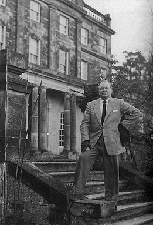

Chapter 14
Lord of the Manor
'My own life is rather dull these days. I sort of won the Maharajah of Jaipur's luxury Sussex estate in a poker game . . .' (Note in the Explorers Log from Dr L. Ron Hubbard, Explorers Journal, February 1960)
 (Scientology's account of the years 1959-63.)
(Scientology's account of the years 1959-63.)
Saint Hill Manor was a Georgian mansion on a landscaped estate two miles from the little market town of East Grinstead in Sussex. The countryside thereabouts was much favoured by the landed gentry in the eighteenth century for the beauty of its verdant, gently rolling hills and its proximity to the court in London, only a few hours away by horse and carriage, and Saint Hill was one of a number of large country houses in the area.
Built for a wealthy landowner in 1733, the manor could not be described as one of the glories of Georgian architecture (indeed, its sandstone façade had a faintly brooding aspect), but it was sufficiently imposing to merit a ballroom with marble columns and grounds of fifty acres with a lake, surrounded by a dense boundary hedge of rhododendrons. By the time it passed into the ownership of the Maharajah of Jaipur, the house boasted eleven bedrooms, eight bathrooms and an outdoor swimming-pool. While the Maharajah spent a considerable sum on interior improvements, including commissioning the artist John Spencer Churchill to paint a mural in one of the first-floor rooms, he only lived in the house intermittently. When the fortunes of the Indian princes wavered after Independence in 1947, he decided to put his English estate on the market and was happy to find a buyer in the unlikely shape of L. Ron Hubbard.
The arrival of an American family at Saint Hill Manor in the spring of 1959 occasioned almost as much excitement in East Grinstead as that of the exotic Maharajah had done some years earlier. Alan Larcombe, a young reporter on the East Grinstead Courier was despatched to interview the new owner and found him to be extremely co-operative, happy to pose for a photograph with his wife and children and more than willing to talk about himself.
|
 |
| Dr Hubbard, the 'nuclear scientist', on the steps of Saint Hill, the Georgian manor house he bought out of the proceeds of Dianetics. (Photo Source Limited) |
The inheriting of his grandfather's insolvent cattle estates was a titbit of information Hubbard had not previously disclosed, as was his revelation that he was deeply involved in the study of plant life. 'The production of plant mutations is one of his most important projects at the moment. By battering seeds with X-rays, Dr Hubbard can either reduce a plant through its stages of evolution or advance it.'
It was, perhaps, inevitable that Hubbard would become an expert gardener the instant he moved into the English countryside and the fact that Saint Hill Manor had well-stocked greenhouses undoubtedly helped fire his interest. But his horticultural experiments also helped divert attention from the real reason he had bought the estate: his intention was that it should become the world-wide headquarters of Scientology. Hubbard surmised, no doubt correctly, that the people of East Grinstead were not quite ready for this piece of information.
In August, the Courier reported that the experiments being conducted at Saint Hill by the 'nuclear scientist, Dr Hubbard' promised to revolutionize gardening. By treating seeds with 'radioactive rays' he was growing tomato plants 16 feet high, with an average of 15 trusses and 45 tomatoes on each truss. He had also discovered that an 'infra-red ray lamp' provided complete protection against mildew, a discovery that was likely to save market gardeners 'thousands of pounds'.
The reporter, again, was Alan Larcombe: 'He showed us some very big tomatoes and I remember thinking at the time that anyone could have grown them that size with fertilizers, but he was very keen we should take a photograph of them, so we did.'[1] The picture the newspaper used was of little Quentin, five years old, standing on duckboards in his father's greenhouse, staring solemnly at the camera through a forest of tomato and maize plants.
Dr Hubbard's experiments soon came to the attention of Garden News, to which publication he revealed, gardener to gardener, his conviction that plants felt pain. He demonstrated by connecting an E-meter to a geranium with crocodile clips, tearing off its leaves and showing how the needle of the E-meter oscillated as he did so. The
_______________
1. Interview with Alan Larcombe, East Grinstead, November 1985
Garden News correspondent was enormously excited and wrote a story under the sensational headline 'PLANTS DO WORRY AND FEEL PAIN', describing Hubbard as a 'revolutionary horticultural scientist'.[2]
![[LRH peers intently at metered tomato plant]](tomato.jpg)
|
| Hubbard as 'revolutionary horticultural scientist', proving that plants can feel pain. (Rex Features Ltd) |
Scientologists around the world could have been forgiven for wondering what their beloved leader was up to, but an explanation was soon forthcoming. The purpose of Ron's experiments, they were told, was to 'reform the world's food supply'. He had already produced 'ever-bearing tomato plants and sweetcorn plants sufficiently impressive to startle British newspapers into front-page stories about this new wizardry'.[3]
Soon after Hubbard moved into Saint Hill, the Church of Scientology commissioned a bust of its founder from the sculptor Edward Harris. Harris liked his sitters to talk while he was working and asked his friend, Joan Vidal, to attend the sittings and chat with Hubbard. 'My first impression of him', she said, 'was that with his very pink skin and light red hair he looked like a fat, pink, scrubbed pig. I remember one of the first things he told me was that you could hear a tomato scream if you cut it and that's why he never ate tomatoes. He talked a lot about whether vegetables could feel pain and about all his past lives. It was very entertaining; it was obvious he had a good mind and was widely read.
'After the bust was finished we were invited to dinner with him and his wife at Saint Hill. When we arrived we were met by Mary Sue. She was a rather drab, mousy, nothing sort of person quite a bit younger than him. She showed us into a book-lined study and he waited a few minutes, rather theatrically, before making an entrance. I don't think they had finished work on the house because we had dinner in the kitchen. It was all white tiled, very antiseptic, and the meal was served by a woman wearing a white overall, white shoes and stockings. There
_______________
2. Garden News, 18 December 1959
3. A Piece of Blue Sky, Jon Atack, 1992
was nothing to drink but Coca-Cola or water and the food was awful - we had frozen plaice fillets, a few vegetables and ice-cream, but he had an enormous steak overhanging his plate. It was obvious that everything revolved around him. He was almost like Oswald Mosley, he had the same sort of power. Both of them talked a lot about past lives; they told me that their daughter had previously been a telephone operator who had died in a fire. We didn't stay late and when we got back to Victoria Station Eddie and I were both so hungry that we went in the buffet and had delicious roast lamb sandwiches.'[4]
In October, Dr Hubbard unveiled yet another of his interests. Learning that East Grinstead had been unable to fill a vacancy for a Road Safety Organizer, he volunteered for the job. As he explained to a meeting of the East Grinstead Road Safety Committee, he was anxious to make a contribution to the community and he felt that the experience he had gained serving on 'numerous' road safety committees in the United States could be put to good use in East Grinstead. He gave an interesting talk on road safety campaigns in the United States, put forward many ideas on how to reduce accidents locally, confidently answered questions and was unanimously elected as the town's new Road Safety Organizer by a grateful committee.
He was not able to give road safety considerations his attention for too long, however, for he had arranged to visit Australia in November to lecture the Scientologists in Melbourne. He left London on 31 October, flying first-class on BOAC via Calcutta and Singapore. At the Hubbard Communications Office in Spring Street, Melbourne, he was greeted by an ecstatic crowd of Scientologists who cheered noisily when he announced his belief that Australia would be the first 'clear continent'. Between lectures, he spent hours with local HASI executives discussing ways of persuading the Australian Labour Party and trades union movement to adopt Scientology techniques. Hubbard was convinced that Scientology could help Labour win the next election in Australia, thus creating a favourable climate for the development of the church and neutralizing the unabated hostility of the Australian media.
While he was still in Melbourne, Hubbard received an urgent telephone call from Washington with bad news. Nibs, he was told, had 'blown'. To Scientologists, 'blowing the org' (leaving the church) was one of the worst crimes in the book: it was almost unbelievable that the highly-placed son and namesake of the founder would take such a step. Nibs had simultaneously held five posts in Scientology's increasingly cumbersome bureaucratic structure: he was Organizational Secretary of the Founding Church of Scientology, Washington DC; Hubbard Communications Officer-in-Charge, Washington DC; Chief Advanced Clinical Course Instructor; Hubbard Communications Office World Wide Technical Director; and a Member of the International Council.
_______________
4. Interview with Joan Vidal, London, January 1986
Despite his portentous titles, Nibs was frustrated by not being able to make any money out of Scientology and he left a letter to his father explaining that this was the only reason for his resignation: 'Over the past few years, I have found it increasingly difficult to maintain basic financial survival for myself and my family. This I must remedy. I fully realize that I have not handled my financial affairs in the most optimum manner. But for six years I have managed to provide, at least the basic necessities, in some manner. In doing so I have depleted all my reserves and have become deeply in debt . . .'
Hubbard, who was not exactly a pillar of rectitude in fiscal matters, was nevertheless furious with his son. Nibs had been in and out of debt ever since he had first turned up on Hubbard's doorstep in Phoenix. The problem was that he had his father's casual attitude towards money, but none of his talent for making it and none of his luck. In his resignation letter, Nibs said he was going to look for a full-time job, but hoped to be able to continue practising Scientology in his spare time. He failed to take into account the fact that his father would automatically view his defection as an act of treachery. Hubbard would never have allowed Nibs to continue trying to make money out of Scientology. He quickly scribbled an airmail letter to Marilyn Routsong on 25 November: 'Nibs was trying to get more money by loans from us. This may make a field upset but we'll survive. If he goes into practice anywhere or starts up a squirrel activity have HCO cancel all certificates and awards of his. He won't ever be hired back.'
A few days later Hubbard received more, equally unwelcome, family news when his Aunt Toilie telephoned from Bremerton to say that his seventy-four-year-old mother had had a stroke, was very ill and not expected to live. Hubbard had had little contact with his parents, or the Waterbury family, since the end of the war. Toilie was the only one who tried to keep in touch, writing to him once or twice a year, and it fell to her to find Ron when May was taken to hospital. Hubbard told her, over a crackling inter-continental telephone line that he could not get away, he was too busy.
Toilie was quite as forceful a personality as a grey-haired old lady as she had been as a young woman. 'You're coming home,' she told him. 'I want you to catch the next flight out. That is orders, Ron. You owe that much to your mother and I pray to God you get here before she's dead.'
By the time Hubbard arrived in Bremerton, his mother was in a coma. He went in to see her, held her hand and talked to her; he told the family afterwards he was sure she knew he was there. She died the following day. 'Ron didn't stay for the funeral,' said his Aunt Marnie. 'He organized the burial, ordered the stone, paid all the expenses and
made arrangements for a man from the Church of Scientology to come up and accompany the body with Hub and Toilie to the funeral in Helena. Then he flew back to England from Bremerton. I thought he should have stayed for the funeral. I don't know what could have been so pressing that he had to get back to England.'[5]
In March 1960, the gentle burghers of East Grinstead learned a little more about their Road Safety Organizer when he published a book titled Have You Lived Before This Life? in which were described a number of startling 'past lives' revealed during auditing. One case history concerned a previous existence as a walrus, another as a fish, a third had witnessed the destruction of Pompeii in AD 79 and a fourth had been a 'very happy being who strayed to the planet Nostra 23,064,000,000 years ago'.
The Courier reported that the book caused a 'storm of controversy' in the town, as might have been anticipated, and Hubbard was prompted to issue a statement seeking to explain something of Scientology: 'Scientific research work on Dianetics and Scientology has been carried out by Dr L. Ron Hubbard, and skilled persons employed by him, over the past 30 years. Only since 1950 has the knowledge gleaned from this exacting and penetrating work into the functions of the mind been released to the general public in the form of special and skilled treatment . . . In connection with Dr Hubbard's book Have You Lived Before This Life? the contents are merely reported from an observer's point of view . . .'
In an internal memo to his press officer, Hubbard stressed the need to emphasize constantly that he was working in the field of 'nuclear physics on life sources and life energy' in order to avoid being tagged as a psychiatrist or spiritualist. 'This will take some doing, perhaps,' he added, in a rare moment of candour.[6]
Hubbard need not have worried overmuch as far as East Grinstead was concerned, since the weather and the Royal Family were topics of much greater perennial interest than whatever was going on at Saint Hill Manor. The cast list of the upcoming, absorbing and long-running British royal soap opera was just being drawn up in spring 1960 - the Queen's third child, Prince Andrew, was born in February and Princess Margaret was due to marry in May. To add a little spice to the conversation in East Grinstead pubs, there was also the forthcoming obscenity trial of D. H. Lawrence's masterpiece, Lady Chatterley's Lover.
This last event was being followed closely by Mary Sue as her husband had recently uncovered a previous life coincidentally revealing her to have been none other than D. H. Lawrence! In a letter to her friend, Marilyn Routsong, Mary Sue explained the considerable
_______________
5. Interview with Mrs. Roberts
6. A Piece of Blue Sky, Jon Atack, 1992
problems she had experienced as D. H. Lawrence. It seemed the great writer had difficulty constructing plots, thought poetry was a joke and believed little of what he wrote.
On the strength of this previous incarnation, Mary Sue confessed that she, too, was going to write a book and outlined the plot with a somewhat unpromising grasp of grammar and spelling. She wrote that it would be completely anti-Christ. The first sentence begins 'In the small town of Balei, a bastard child was born.' She then intended to show how he was really a mongrel and the son of three fathers (a joke on the Trinity of God) because the mother had, the night in question, slept with three of the town's most virile men and not knowing whose sperm had reached her womb, had thereupon decided to call him Ali, Son of ----, Son of ----, and Son of ---- which impressed the local inhabitants and created a stir throughout the country. She concluded that she wouldn't have it in her name, for obvious reasons.
In the same letter, Mary Sue mentioned the rumpus that had been caused when Ron ordered all the staff at Saint Hill to be checked out on an E-meter. She noted that three office staff refused and five domestic staff refused. She was surprised and wrote that they were all scared to death of the E-meter and pretending that it was something that would only happen in America, adding that they evidently have something to hide because of their fear to go on the E-meter.[7]
Hubbard's insistence that everyone who worked for him be interrogated on the E-meter was part of the routine 'security checking' he deemed necessary to identify potential trouble-makers, dissidents and spies. No one in Scientology now doubted the capability of the E-meter to expose visceral emotions and ever more elaborate 'sec-checks' would become a common feature of life in the Scientology movement - evidence of Hubbard's persistent paranoia about his enemies, both those that existed in reality and those that thronged his imagination.
Despite the not unreasonable reluctance of some of the servants at Saint Hill Manor to be interviewed about their private lives while grasping tin cans attached to a mysterious electric machine, the Hubbards had settled in comfortably by the spring of 1960. The painters and decorators had finished their work and the family was enjoying the Elysian delights of gracious living in an English country house. On their 'personal staff' there were a secretary, housekeeper, cook, butler, valet, nanny and tutor for the children.
The former billiards room, leading directly from the grand entrance hall, had been re-modelled into Hubbard's private office, with a bench seat upholstered in red leather down one side of the room and a personal teleprinter installed alongside his desk. Also accessible from the hall was the family dining-room, which included a bar stocked
_______________
7. Letter from Mary Sue Hubbard to Marilyn Routsong, 4 February 1960
with Coca-Cola (Hubbard's preferred drink), a large lounge and a television room. Upstairs, Hubbard had his own suite comprising a sitting-room, bedroom and bathroom, adjoining Mary Sue's office, bedroom and bathroom. The children had bedrooms at the other end of the house and the 'Monkey Room', named after the murals painted by John Spencer Churchill, was converted into a school-room and equipped with trampoline. Apart from the kitchen, most of the remaining rooms in the manor were used as offices.
It was the first time that the Hubbards as a family had remained in one place for any length of time and the children were particularly enchanted by Saint Hill Manor, with its maze of rooms and sweeping grounds. At weekends the four of them could usually be found, muddy-kneed, exploring the estate or paddling in rubber boots on the fringes of the lake; twice a week Diana and Suzette attended dancing lessons at the local Bush Davies school.
Hubbard, too, liked to stroll the grounds at weekends, taking photographs with one or the other of his new cameras. Photography was a recently acquired hobby and his framed pictures could be found in many of the rooms at Saint Hill. Mainly landscapes and portraits, they were of course universally praised, even those that were slightly out of focus.
All in all, visitors to Saint Hill at this time would have observed little amiss with the nice American family who had taken up residence. Certainly no one would have guessed that Hubbard possessed the dubious distinction of being probably the only owner of an English country house under the continuous surveillance of the FBI. His file, Number 244-210-B, was much thumbed and even included an interview with his first wife, Polly, by then re-married, who was able to say very little except that her first husband was a 'genius with a misdirected mind'.
To some extent, the FBI's interest in Hubbard was a situation of his own making, for the frequently intemperate bulletins and policy letters which flowed from Saint Hill in an endless stream for distribution to Scientologists around the world were bound to generate the attention of J. Edgar Hoover's staff. On 24 April 1960, for example, Hubbard issued a bulletin to US franchise holders asking them to do everything in their power to deny the presidency to 'a person named Richard M. Nixon'.
He claimed that after an innocent reference to Nixon in a Scientology magazine, two armed secret service agents, acting on Nixon's orders, had threatened staff on duty at the founding church in Washington: 'Hulking over desks, shouting violently, they stated that they daily had to make such calls on "lots of people" to prevent Nixon's name from being used in ways Nixon disliked . . . They said Nixon
believed in nothing the Founding Church of Scientology stood for . . .
'We want clean hands in public office in the United States. Let's begin by doggedly denying Nixon the presidency no matter what his Secret Service tries to do to us now . . . He hates us and has used what police force was available to him to say so. So please get busy on it . . .'
Nixon was indeed denied the presidency, although it was possible that the famous televised debates with John F. Kennedy had more to do with it than the HCO Bulletin. But it was becoming evident that the owner of Saint Hill Manor considered he had an important role to play in political and international affairs and it was a responsibility he had no intention of shirking.
An HCO Bulletin in June promulgated the 'Special Zone Plan - The Scientologists Role in Life', in which Hubbard explained how Scientologists could exert influence in politics. 'Don't bother to get elected,' he wrote. 'Get a job on the secretarial staff or the bodyguard.' In this way positioned close to the seat of power, he argued, Scientology would be advantageously situated to transform an organization. 'If we were revolutionaries,' he added, 'this HCO Bulletin would be a very dangerous document.'
In August, the 'Special Zone Plan' was absorbed into a new 'Department of Government Affairs' made necessary, Hubbard gravely explained, because of the amount of time senior Scientology executives were having to devote to governmental affairs, as governments around the world disintegrated under the threat of atomic war and Communism. 'The goal of the Department', he wrote 'is to bring government and hostile philosophies or societies into a state of complete compliance with the goals of Scientology. This is done by high-level ability to control and in its absence by a low-level ability to overwhelm. Introvert such agencies. Control such agencies.'
Returning to a familiar theme, Hubbard urged his followers to defend Scientology by attacking its opponents: 'If attacked on some vulnerable point by anyone or anything or any organization, always find or manufacture enough threat against them to cause them to sue for peace . . . Don't ever defend, always attack. Don't ever do nothing. Unexpected attacks in the rear of the enemy's front ranks work best .'
The Department of Government Affairs never existed other than as a 'policy letter',[8] but then much of Hubbard's private world only existed on paper. In HCO Bulletins and Policy Letters replete with the trappings of bureaucratic red tape - colour-coded distribution lists, elaborate references, innumerable abbreviations, etc - Scientology flourished as an international organization of enormous influence
_______________
8. Interview with George Hay, London, March 1987
waiting in the wings to save the universe from the combined perils of Communism, nuclear weapons and its own folly.
Sitting at an electric typewriter in his study at Saint Hill Manor, often clicking away all night just as in the days when he was writing science fiction, Hubbard demonstrated his extraordinary range as a writer by effortlessly producing sheaves of documents that appeared to have been drafted by committees of bureaucrats and lawyers. Laid out and printed like official government papers, they conferred dry authority on content which, frequently, would not have withstood too close scrutiny. But of course no Scientologist would question the literal truth of anything Hubbard wrote, no matter how improbable - if Ron said it was so, it was so.
Hubbard's blossoming omnipotence was bolstered by the stately fashion in which he now travelled, always first-class, usually accompanied by a faithful courtier and greeted at every destination by an awed welcoming party of admirers. In October and November 1960 he visited South Africa to lecture Scientologists in Cape Town and Johannesburg; in December he flew to Washington DC, spent Christmas and the New Year there, returned to Johannesburg to deliver more lectures in mid-January, and arrived back at Saint Hill Manor towards the end of February 1961.
In March, Hubbard announced the launch of the 'Saint Hill Special Briefing Course' for those auditors who wished to train personally under his auspices. The cost of the 'SHSBC' was £250 per person and the first student to enrol was Reg Sharpe, a retired businessman who had become so enamoured with Scientology that he bought a house in the little village of Saint Hill, adjoining the estate, in order to be close to Ron. For the first couple of weeks there were only two students on the course, but more soon began to arrive from around the world, lured by the promise that 'Ron, personally, would discover and assess with the aid of an E-meter' each student's goal 'for this lifetime'.
Mary Sue, who was the course supervisor, also held out the prospect of material rewards: 'I want you to make money. If any one of you cannot conceive of an auditor driving around in a gold-plated Cadillac or Rolls you had better reorientate yourselves. I like the idea.[9]
As the numbers on the Briefing Course increased, accommodation became a problem. The greenhouses where Ron had conducted his pioneering horticultural experiments were demolished to make way for a 'chapel' which in reality was used as a lecture hall. Other buildings went up around the manor without a moment's thought for obtaining planning permission - Hubbard's strongly held opinion was that what he did on his own land was his own business. It was a view
_______________
9. HCO News Letter, 7 May 1962
the local authority was disinclined to share when someone pointed out what was going on at Saint Hill and Hubbard was eventually prevailed upon to employ an architect and apply for planning approval like everyone else.
The Briefing Course would eventually comprise more than three hundred taped lectures by L. Ron Hubbard, its longevity sustained by 'technical breakthroughs' that followed closely one upon the other, each new technique replacing the last and requiring dedicated Scientologists to trek back to Saint Hill time and time again in order to keep up to date.
When Hubbard was not lecturing he was writing directives covering everything from how to save the world to how to clean his office. No detail was too insignificant to merit his attention: one HCO Policy Letter covering two pages was posted prominently in the garage at Saint Hill explaining how cars should be washed and another was addressed to the Household Section headed 'Flowers, Care Of'. He also dashed off a new potted biography of himself adding further gloss to his already well-burnished career. It was included in a handout headed 'What Is Scientology?':
'For hundreds of years physical scientists have been seeking to apply the exact knowledge they had gained of the physical universe to Man and his problems. Newton, Sir James Jeans, Einstein, have all sought to find the exact laws of human behaviour in order to help Mankind.
'Developed by L. Ron Hubbard, C.E., Ph.D., a nuclear physicist, Scientology has demonstrably achieved this long-sought goal. Doctor Hubbard, educated in advanced physics and higher mathematics and also a student of Sigmund Freud and others, began his present researches thirty years ago at George Washington University. The dramatic result has been Scientology . . .'
The laudable aim of 'helping mankind' sat rather uncomfortably with the requirement for security checks, which were stepped up during 1961. An even more intrusive questionnaire was introduced which appeared to have been designed with perverts and criminals rather than potential trouble-makers in mind. Many of the questions reflected Hubbard's morbid preoccupation with sexual deviation ('Have you ever had intercourse with a member of your family' and 'Have you ever had anything to do with a baby farm?') and a wide range of crimes were also probed ('Have you ever murdered anyone?' and 'Have you ever done any illicit diamond buying?'). In addition Hubbard specifically wanted to know if the individual being checked had ever 'had any unkind thoughts' about himself or Mary Sue. Every check sheet was forwarded to Saint Hill on Hubbard's orders. When combined with the individual folders in which details of auditing
sessions were recorded, they made up a comprehensive dossier in which the innermost thoughts of every member of the Church of Scientology were filed.
Three days after Christmas 1961, Hubbard flew to Washington DC to attend a congress and publicize the benefits to be obtained by enrolling in the Saint Hill Briefing Course. He asked Reg Sharpe to accompany him on the trip and Sharpe was very soon made aware of his leader's little foibles. When their aeroplane stopped for re-fuelling at Boston, Hubbard scurried across the passenger terminal and stood with his back pressed against a wall for the duration of the stop, explaining to his bemused companion that there were people 'out to get him'.
In Washington, Sharpe was astonished by the adulation with which Hubbard was received. He lectured for about four hours on each day of the congress to a spellbound audience and had refined his speaking technique to a fine art, shamelessly borrowing the tricks of show business and political conventions. He liked to appear at the back of the hall to the accompaniment of a drum roll and stride through the audience, waving his arms in greeting and shaking hands on the way to the rostrum. His timing, the essence of a good speaker, was faultless and he could hold an entire auditorium in thrall for hours. Like a cabaret artiste doing two spots a night, he got into the habit of changing his clothes during a break, appearing for the second half of his lecture in a silk suit of a different colour, or sometimes a gold lamé jacket. It held the interest of the audience, he explained, and also solved his perspiration problems.
Hubbard's vigorous promotion of Saint Hill as the Mecca of Scientology resulted in hundreds of young Americans making their way to East Grinstead, somewhat to the surprise of the townspeople, who still had very little idea of what was going on. 'Dr Hubbard' had recently adopted a rather lower profile locally: he resigned from his position as the town's Road Safety Organizer, pleading pressure of business, was very rarely seen outside the grounds of Saint Hill Manor and no longer courted publicity from the local newspapers. By and large, the influx of American visitors to the town was welcomed: they were quiet, polite and spent freely. If they were less than forthcoming about what they were doing in the area, that was all right with the locals, who instinctively respected the rights of folk who wanted to 'keep themselves to themselves'.
Members of East Grinstead Urban Council expressed some faint concern inasmuch as Saint Hill Manor was restricted, by planning regulations, to private residential use, but such was Dr Hubbard's reputation that they resolved to do no more than urge him, in confidence, to apply for planning permission regularizing the use of
the manor for office and research purposes. He responded by slapping in a planning application to build a seventy-five-room administration centre in the grounds of the manor and circularizing a 'Report to the Community' appealing for support.
In the report, Hubbard revealed to the people of East Grinstead that as a result of his experiments on plants and 'living energies' he was able to reduce the physiological age of an individual by as much as twenty years and increase the average life span by as much as twenty-five per cent. 'We have not announced anything of this to the press,' he confided, 'as we are already overworked in centres of the world for discoveries such as these. But we wanted you as a friend to be aware of this, and consider you have the right to know what is happening here.'
In August, Hubbard turned his attention to the broader arena of international affairs by offering to help President Kennedy narrow the gap in the space race. The young president had committed the United States to landing a man on the moon before the decade was out and, as a loyal American, Hubbard obviously wanted to do what he could to help. On 13 August 1962, he wrote a long letter to the White House to advise Kennedy that Scientology techniques were peculiarly applicable to space flight and that the perception of an astronaut could be increased far beyond human range and stamina to levels hitherto unattained in human beings.
To establish his bona fides, Hubbard claimed to have coached the 'British Olympic team', producing unheard-of results. He added that he had been fending off approaches from the Russians for years, ever since he was offered Pavlov's laboratories in 1938. The first manuscript of his work had been stolen in Miami in 1942, the second in Los Angeles in 1950 and 'only last week' Communist interests had stolen forty hours of tape containing the latest research work from the Scientology headquarters in South Africa.
Although he was convinced that there was a growing library on Scientology in Russia, fortunately the Russians did not yet have the advanced knowledge that would be applicable to the space programme. All the US Government need do, he said, was turn over anyone needing conditioning for space flight and Scientology would do the rest. Each man would need processing for about 250 hours and the cost would only be $25 an hour, with the possibility of a discount for large numbers. 'Man will not successfully get into space without us . . .' he warned. 'We do not wish the United States to lose either the space race or the next war. The deciding factor in that race or that war may very well be lying in your hands at this moment, and may depend on what is done with this letter . . . Courteously, L. Ron Hubbard.'
It seemed that Hubbard seriously expected his offer to receive proper consideration in the Oval Office, for two weeks later he was in Washington discussing with the staff at the Hubbard Communications Office how to handle the expected inflow of astronauts. It was agreed that any dealings with the US Government would be on a cash basis only, that they would reserve the right to reject anyone they considered to be unsuitable and that if Government officials wanted to investigate Scientology techniques they would be told, pleasantly, to 'go up the spout'. If there was a flood of astronauts arriving for processing, Ron would come over from Saint Hill and set up a special operation to handle them.[10]
On the voyage back to England, travelling first-class on the Queen Elizabeth with Reg Sharpe, the two men passed their time auditing each other. Hubbard told his friend that in a past life on another planet he had been in charge of a factory making steel humanoids which he sold to thetans, offering hire purchase terms if they could not afford the cash price.
Back at Saint Hill, Hubbard was baffled to discover that the President had not replied to his letter, but everything was made clear to him a few months later when agents of the Food and Drugs Administration staged a raid on the Scientology headquarters in Washington. It was obvious to Hubbard that the President had asked the FDA to look into Scientology as a result of his letter and the FDA, wishing to promote its own programmes, had attempted to turn the tables on Scientology.
_______________
10. Minutes of special staff meeting, HCO Washington, 29 August 1952